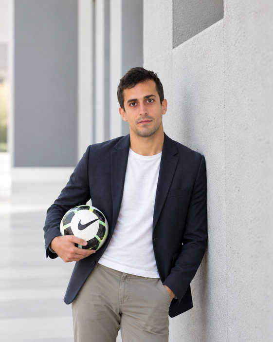

Experiència en el disseny i desenvolupament de processos d'ensenyament-aprenentatge, integrant els aspectes tècnics, tàctics i físics en contextos pràctics.
Docència en cicles formatius i formació de tècnics esportius, amb experiència en futbol, esquí alpí i muntanya.
Experiència com a entrenador i coordinador, amb responsabilitats de metodologia i preparació física.
Formació específica en alt rendiment d'esports col·lectius i experiència vinculada a l'entrenament.
Una trajectòria que combina docència, formació esportiva, futbol formatiu i coordinació de la formació en centres de treball.
Tècnic esportiu en futbol, esquí alpí i muntanya. Tutoria i coordinació de la formació en centres de treball.
Barça Escola Barcelona i participació en un campus d'estiu internacional a Itàlia.
Tècnic esportiu en futbol. Tutoria i coordinació de la formació en centres de treball.
Entrenador del primer equip masculí i responsable de metodologia i preparació física del futbol base.
Formació universitària i tècnica orientada a l'educació, l'esport, el futbol, el rendiment i la gestió esportiva.
Universidad de Granada · 2014
Universitat Ramon Llull — Blanquerna · 2015
INEFC Barcelona — Byomedic System · 2016
Centro Nacional de Formación de Entrenadores · 2017
Universidad Europea de Madrid · 2018
Universidad Internacional de Valencia · 2019
Els àmbits que defineixen el perfil professional i sobre els quals es pot ampliar informació, projectes i recursos.
Disseny de processos d'ensenyament-aprenentatge, adaptabilitat, innovació i competència digital.
Formació de tècnics esportius i connexió entre coneixement teòric i aplicació pràctica.
Entrenament, futbol formatiu, metodologia i preparació física aplicats a contextos esportius.
Competències destacades del perfil professional.
Nivell C2
Nivell B1
ACTIC Nivell 2 · Google Certified Educator Nivell 1 · COPLEFC 55322